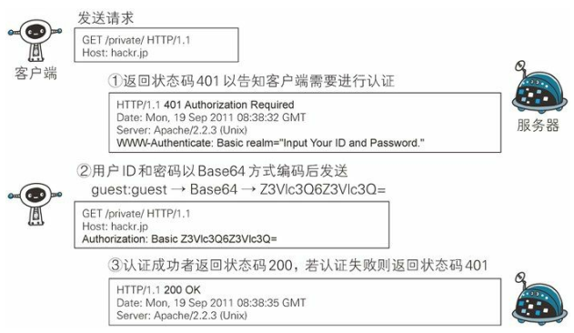
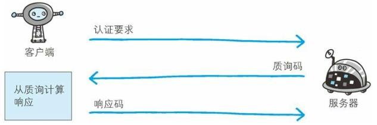
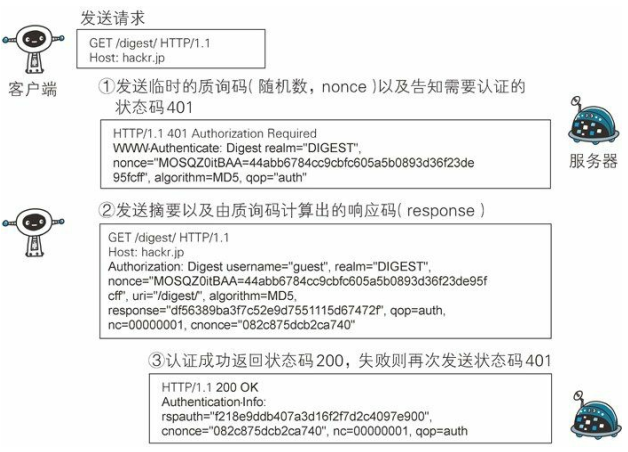
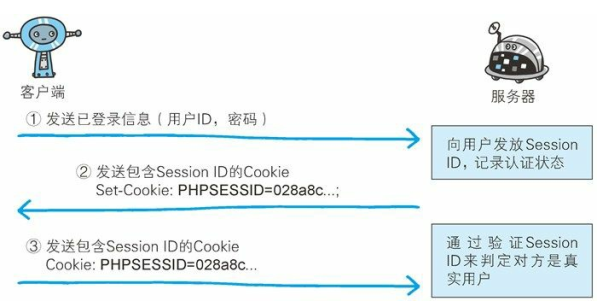

用户身份的认证
计算机本身无法判断坐在显示器前的使用者的身份。为确认使用者是否真的具有访问系统的权限，就需要核对“登录者本人才知道的信息”、“登录者本人才会有的信息”。
核对的信息通常是指以下这些。
- 密码：只有本人才会知道的字符串信息。
- 动态令牌：仅限本人持有的设备内显示的一次性密码。
- 数字证书：仅限本人（终端）持有的信息。
- 生物认证：指纹和虹膜等本人的生理信息。
- IC 卡等：仅限本人持有的信息。
HTTP/1.1 使用的认证方式如下所示。
- BASIC 认证（基本认证）
- DIGEST 认证（摘要认证）
- SSL 客户端认证
- FormBase 认证（基于表单认证）
此外，还有 Windows 统一认证（Keberos 认证、NTLM 认证）。
BASIC 认证
BASIC 认证（基本认证）是从 HTTP/1.0 就定义的认证方式。即便是现在仍有一部分的网站会使用这种认证方式。是 Web 服务器与通信客户端之间进行的认证方式。

BASIC 认证的认证步骤
步骤 1：当请求的资源需要 BASIC 认证时，服务器会随状态码 401 Authorization Required，返回带 WWW-Authenticate 首部字段的响应。该字段内包含认证的方式（BASIC）及 Request-URI 安全域字符串（realm）。
步骤 2：接收到状态码 401 的客户端为了通过 BASIC 认证，需要将用户 ID 及密码发送给服务器。发送的字符串内容是由用户 ID 和密码构成，两者中间以冒号（:）连接后，再经过 Base64 编码处理。
假设用户 ID 为 guest，密码是 guest，连接起来就会形成 guest:guest 这样的字符串。然后经过 Base64 编码，最后的结果即是 Z3Vlc3Q6Z3Vlc3Q=。把这串字符串写入首部字段 Authorization 后，发送请求。
当用户代理为浏览器时，用户仅需输入用户 ID 和密码即可，之后，浏览器会自动完成到 Base64 编码的转换工作。
步骤 3：接收到包含首部字段 Authorization 请求的服务器，会对认证信息的正确性进行验证。如验证通过， 则返回一条包含 Request-URI 资源的响应。
BASIC 认证虽然采用 Base64 编码方式，但这不是加密处理。不需要任何附加信息即可对其解码。换言之，由于明文解码后就是用户 ID 和密码，在 HTTP 等非加密通信的线路上进行 BASIC 认证的过程中，如果被人窃听，被盗的可能性极高。
另外，除此之外想再进行一次 BASIC 认证时，一般的浏览器却无法实现认证注销操作，这也是问题之一。
BASIC 认证使用上不够便捷灵活，且达不到多数 Web 网站期望的安全性等级，因此它并不常用。
DIGEST 认证
为弥补 BASIC 认证存在的弱点，从 HTTP/1.1 起就有了 DIGEST 认证。DIGEST 认证同样使用质询 / 响应的方式 （challenge/response），但不会像 BASIC 认证那样直接发送明文密码。
所谓质询响应方式是指，一开始一方会先发送认证要求给另一方，接着使用从另一方那接收到的质询码计算生成响应码。最后将响应码返回给对方进行认证的方式。

因为发送给对方的只是响应摘要及由质询码产生的计算结果，所以比起 BASIC 认证，密码泄露的可能性就降低了。

DIGEST 认证的认证步骤
步骤 1：请求需认证的资源时，服务器会随着状态码 401 Authorization Required，返回带 WWW-Authenticate 首部字段的响应。该字段内包含质问响应方式认证所需的临时质询码（随机数，nonce）。
首部字段 WWW-Authenticate 内必须包含 realm 和 nonce 这两个字段的信息。客户端就是依靠向服务器回送这两个值进行认证的。
nonce 是一种每次随返回的 401 响应生成的任意随机字符串。该字符串通常推荐由 Base64 编码的十六进制数的组成形式，但实际内容依赖服务器的具体实现。
步骤 2：接收到 401 状态码的客户端，返回的响应中包含 DIGEST 认证必须的首部字段 Authorization 信息。
首部字段 Authorization 内必须包含 username、realm、nonce、uri 和 response 的字段信息。其中， realm 和 nonce 就是之前从服务器接收到的响应中的字段。
username 是 realm 限定范围内可进行认证的用户名。
uri（digest-uri）即 Request-URI 的值，但考虑到经代理转发后 Request-URI 的值可能被修改，因此事先会复制一份副本保存在 uri 内。
response 也可叫做 Request-Digest，存放经过 MD5 运算后的密码字符串，形成响应码。
步骤 3：接收到包含首部字段 Authorization 请求的服务器，会确认认证信息的正确性。认证通过后则返回包含 Request-URI 资源的响应。
并且这时会在首部字段 Authentication-Info 写入一些认证成功的相关信息。
DIGEST 认证提供了高于 BASIC 认证的安全等级，但是和 HTTPS 的客户端认证相比仍旧很弱。DIGEST 认证提供防止密码被窃听的保护机制，但并不存在防止用户伪装的保护机制。
DIGEST 认证和 BASIC 认证一样，使用上不那么便捷灵活，且仍达不到多数 Web 网站对高度安全等级的追求标准。因此它的适用范围也有所受限。
SSL 客户端认证
SSL客户端认证是借由 HTTPS 的客户端证书完成认证的方式。凭借客户端证书认证，服务器可确认访问是否来自已登录的客户端。
1. SSL 客户端认证的认证步骤
为达到 SSL客户端认证的目的，需要事先将客户端证书分发给客户端，且客户端必须安装此证书。
- 步骤 1：接收到需要认证资源的请求，服务器会发送 CertificateRequest 报文，要求客户端提供客户端证书。
- 步骤 2：用户选择将发送的客户端证书后，客户端会把客户端证书信息以 Client Certificate 报文方式发送给服务器。
- 步骤 3：服务器验证客户端证书验证通过后方可领取证书内客户端的公开密钥，然后开始 HTTPS 加密通信。
2. 双因素认证
在多数情况下，SSL客户端认证不会仅依靠证书完成认证，一般会和基于表单认证（稍后讲解）组合形成一种双因素认证（Two-factor authentication）来使用。所谓双因素认证就是指，认证过程中不仅需要密码这一个因素，还需要申请认证者提供其他持有信息，从而作为另一个因素，与其组合使用的认证方式。
换言之，第一个认证因素的 SSL客户端证书用来认证客户端计算机，另一个认证因素的密码则用来确定这是用户本人的行为。
通过双因素认证后，就可以确认是用户本人正在使用匹配正确的计算机访问服务器。
FormBase 认证
基于表单的认证方法并不是在 HTTP 协议中定义的。客户端会向服务器上的 Web 应用程序发送登录信息（Credential），按登录信息的验证结果认证。
根据 Web 应用程序的实际安装，提供的用户界面及认证方式也各不相同。
多数情况下，输入已事先登录的用户 ID（通常是任意字符串或邮件地址）和密码等登录信息后，发送给 Web 应用程序，基于认证结果来决定认证是否成功。
1. 认证多半为基于表单认证
由于使用上的便利性及安全性问题，HTTP 协议标准提供的 BASIC 认证和 DIGEST 认证几乎不怎么使用。另外，SSL客户端认证虽然具有高度的安全等级，但因为导入及维持费用等问题， 还尚未普及。
比如 SSH 和 FTP 协议，服务器与客户端之间的认证是合乎标准规范的，并且满足了最基本的功能需求上的安全使用级别， 因此这些协议的认证可以拿来直接使用。但是对于 Web 网站的认证功能，能够满足其安全使用级别的标准规范并不存在，所以只好使用由 Web 应用程序各自实现基于表单的认证方式。
不具备共同标准规范的表单认证，在每个 Web 网站上都会有各不相同的实现方式。如果是全面考虑过安全性能而实现的表单认证，那么就能够具备高度的安全等级。但在表单认证的实现中存在问题的 Web 网站也是屡见不鲜。
2. Session 管理及 Cookie 应用
基于表单认证的标准规范尚未有定论，一般会使用 Cookie 来管理Session（会话）。
基于表单认证本身是通过服务器端的 Web 应用，将客户端发送过来的用户 ID 和密码与之前登录过的信息做匹配来进行认证的。
但鉴于 HTTP 是无状态协议，之前已认证成功的用户状态无法通过协议层面保存下来。即，无法实现状态管理，因此即使当该用户下一次继续访问，也无法区分他与其他的用户。于是我们会使用 Cookie 来管理 Session，以弥补 HTTP 协议中不存在的状态管理功能。

步骤 1：客户端把用户 ID 和密码等登录信息放入报文的实体部分，通常是以 POST 方法把请求发送给服务器。而这时，会使用 HTTPS通信来进行 HTML表单画面的显示和用户输入数据的发送。
步骤 2：服务器会发放用以识别用户的 Session ID。通过验证从客户端发送过来的登录信息进行身份认证， 然后把用户的认证状态与Session ID 绑定后记录在服务器端。
向客户端返回响应时，会在首部字段 Set-Cookie 内写入 Session ID（如 PHPSESSID=028a8c…）。
然而，如果 Session ID 被第三方盗走，对方就可以伪装成你的身份进行恶意操作了。因此必须防止 Session ID 被盗，或被猜出。为了做到这点， Session ID 应使用难以推测的字符串，且服务器端也需要进行有效期的管理， 保证其安全性。
另外，为减轻跨站脚本攻击（XSS） 造成的损失，建议事先在 Cookie 内加上 httponly 属性。
步骤 3：客户端接收到从服务器端发来的 Session ID 后，会将其作为 Cookie 保存在本地。下次向服务器发送请求时， 浏览器会自动发送 Cookie，所以 Session ID 也随之发送到服务器。服务器端可通过验证接收到的 Session ID 识别用户和其认证状态。
另外，不仅基于表单认证的登录信息及认证过程都无标准化的方法，服务器端应如何保存用户提交的密码等登录信息等也没有标准化。
通常， 一种安全的保存方法是，先利用给密码加盐（salt）的方式增加额外信息，再使用散列（hash）函数计算出散列值后保存。但是我们也经常看到直接保存明文密码的做法，而这样的做法具有导致密码泄露的风险。